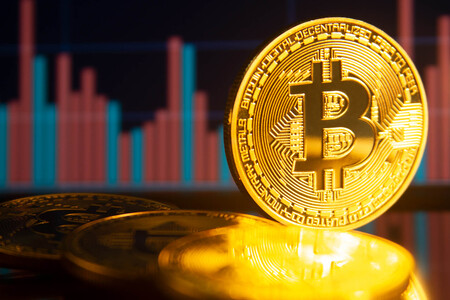

|
|
|  | Bitcoin (símbolo: BitcoinSign.svg; código: BTC, XBT) es un protocolo, proyecto de código abierto y red peer-to-peer que se utiliza como criptomoneda, sistema de pago y mercancía. Es una unidad de pago autorregulada sin referencia física ni respaldo de un país, que preserva el anonimato de sus propietarios y cuyas transacciones se realizan a través de internet mediante códigos cifrados y confirmados de manera múltiple por los propios integrantes de la red (mediante la denominada tecnología 'blockchain', en la práctica un libro contable o registro compartido de la actividad). El conocimiento de un código te hace propietario de ese activo (criptomoneda). Es una moneda completamente digital. Uno de los aspectos más polémicos es el proceso de creación de bitcoins, lo que ha venido a denominarse minería. En la práctica, ha pasado a ser controlado por pocas manos, la mayoría grupos organizados afincados en Asia. |